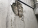

2023年
問題93 鉄筋コンクリート構造とその材料に関する次の記述のうち，最も不適当なものはどれか．
（1）セメントペーストは，砂，セメント，水を練り混ぜたものである．
（2）梁に設けられた設備配管のための開孔部の径は，一般に梁せいの1/3以下とする．
（3）コンクリートと鉄筋の線膨張係数は，ほぼ等しい．
（4）柱の帯筋比は，0.2%以上とする．
（5）中性化している部分のコンクリート表面からの距離を中性化深さという．
2023年
問題93 正解（1） 頻出度AAA
砂，セメント，水を練り混ぜたものは「モルタル」である（2023-93-1表参照）．
2023-93-1表 コンクリート，モルタル，セメントペースト
| 名称／混合物 | セメント | 水 | 砂 | 砂利 |
| コンクリート | ○ | ○ | ○ | ○ |
| モルタル（とろ） | ○ | ○ | ○ | |
| セメントペースト（のろ） | ○ | ○ |
-(2) 梁にあける設備用の貫通孔は，柱に近い部分を避け中央部に設けて，貫通孔と貫通孔の中心間隔は孔の直径の 3 倍以上とする（2023-93-1図参照）．
貫通孔の直径は主筋を避けて，梁せい（梁の高さ）の1/3以下とし，開孔部には十分な開孔補強筋を配置する．
建築後，梁に貫通孔をあけることは構造耐力上好ましくない．
-(3) 鉄筋とコンクリートの線膨張係数はほぼ等しく（およそ10-5/℃），相互の付着性能もよいことが，鉄筋コンクリート造を可能にしている．
-(4) 「帯筋比」とは，柱の軸断面の，帯筋の断面積の，コンクリートの断面積に対する比である．建築基準法施行令で0.2％以上と定められている．
鉄筋コンクリート造の配筋は2023-93-2図，2023-93-2表参照．
出典 日本建築学会 市民のための耐震工学講座
https://www.aij.or.jp/jpn/seismj/lecture/lec7.htm を基に作成
2023-93-2表 配筋の名称と負担する応力
| 配筋の名称 | 負担する応力 | 備考 |
| 柱の主筋 | 曲げモーメント，軸方向力 | ― |
| 柱の帯筋 | せん断力 | フープともいう． |
| 梁の主筋 | 曲げモーメント | ― |
| 梁の曲げ筋 | せん断力 | 梁の反曲点付近に入れる． |
| 梁のあばら筋 | せん断力 | スターラップともいう． |
-(5) アルカリ性のコンクリートは空気中の炭酸ガスの影響で次第に表面から中性化していき，内部の鉄筋への防錆効果を失っていく．中性化深さは経過時間の平方根に比例すると言われる．
腐食した鉄筋はコンクリートの爆裂の原因となる（2023-93-3図参照）．

出典 有限会社アレックス
https://www.alex-toso.jp/company/
中性化の程度はフェノールフタレインpH指示薬で調べることができる．